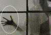

GEISTERN IM BOGENOFFSET
|
Unter Geistern im Bogenoffset versteht man
Kontakterscheinungen oder Vergilbungen nach dem
Druck, die im Auslagestapel auftreten (nicht
Ablegen) (Abb. 1 und Abb. 2). Bei Vergilbungen
werden Motive der frisch gedruckten Seite auf der
Rückseite des Folgebogens andeutungsweise
sichtbar. Bei Kontakterscheinungen treten Motive
der Schöndruckseite in einem Motiv des
Widerdrucks auf.
Das Geistern im Bogenoffset stellt ein
ästhetisches Problem dar, das bis zur
Unverkäuflichkeit der Drucke führen
kann.
|
|
Abb. 1: Geistern im Bogenoffset beim Druck eines
Plakates.
|
|
|
|
Mögliche Ursachen:
|
|
|
|
Abb. 2: Rückseite des Bogens aus Abb.
1.
|
|
|
|
|
|
Abb. 3: Geistern im Bogenoffset beim Druck auf
gestrichenes Papier; Widerdruck.
|
|
|
|

|
|
Abb. 4: Rückseite des Bogens aus Abb. 3;
Schöndruck.
|
|
|
|
|
|
Abb. 5: Unbeanstandeter Vergleichsdruck.
|
|
|
|

|
|
|
|
|
|

|
|
|
|
|
|

|
|
|
|
|
|

|
|
|
|
|
|
|
Die Ursachen des Geisterns können äußerst
vielfältig sein und sind nicht immer nur an einem
Material- oder Produktionsparameter festzumachen.
Erschwerend kommt hinzu, dass das Geistern unter gewissen
Umständen auftritt und zu einem späteren Zeitpunkt
ohne nennenswerte Veränderung der Produktionsparameter
verschwunden ist.
Aus der Literatur und aus bisherigen Forschungserkenntnissen
sind folgende Ursachen für das Geistern bekannt:
Für Vergilbungseffekte an unbedruckten Stellen:
Bei der Druckfarbentrocknung im Stapel entstehen
Spaltprodukte, die bei ungünstigen Bedingungen - meist
bei der Verarbeitung von gestrichenen Papieren - ein
Anfärben oder Vergilben des im Stapel darüber
liegenden Bogens bewirken können. Dringen die
gefärbten, flüchtigen Spaltprodukte im Stapel in
die unbedruckte, gestrichene Bedruckstoffrückseite ein,
werden sie durch Adsorption im Strich festgehalten. Gilbung
kann dabei sowohl durch die Eigenfärbung der
Spaltprodukte als auch durch Veränderung optischer
Aufheller im Strich entstehen. Die Vergilbungswirkung ist in
starkem Maße abhängig von der
Strichzusammensetzung der Bedruckstoffe und von der
Beschaffenheit des optischen Aufhellers. Weiterhin ist aber
die Vergilbung auch in hohem Maße von der Menge der
Spaltprodukte abhängig.
Für Kontakterscheinungen an bedruckten Stellen:
Nach dem Schöndruck stehen die frisch gedruckten Motive
im Stapel in Kontakt mit der unbedruckten Rückseite,
also der Widerdruckseite. Durch die bei der
Druckfarbentrocknung entstehenden Spaltprodukte kann dadurch
ein latentes Bild der im Schöndruck gedruckten Motive
auf der Widerdruckseite entstehen. An diesen Stellen
verändert sich die Oberflächenspannung des
Papiers. Kommt dann im Widerdruck ein Motiv mit diesem
latenten Bild des Schöndrucks zusammen, ändert
sich in diesem Bereich die Druckfarbenannahme und das
Schöndruckmotiv wird im Widerdruck sichtbar.
Beim getrennten Schön- und Widerdruck kann der Zeitraum
zwischen den beiden Druckdurchgängen einen Einfluss auf
die genannten Geistereffekte ausüben.
Es lässt sich jedoch kein genauer Zeitraum festlegen,
da diese Fehlererscheinung stark von der jeweiligen
Druckfarbe/Papierkombination abhängig ist.
|
Mögliche Abhilfen:
|
|
Da es sich beim Geistern überwiegend um eine
Wechselwirkung zwischen Druckfarbe und Papier handelt, kann
nur versucht werden, einen der beiden oder beide
Materialparameter auszuwechseln.
Die Stapel sollten abseits von Wärme- und
Kälteeinwirkungen (Heizkörper,
Heißluftzuführungen, Außenmauern) gelagert
werden.
Eine gute Belüftung zwischen den Lagen in Verbindung
mit niedrigen Stapelhöhen minimiert die Gefahr des
Geisterns.
|
Beispiel(e):
|
|
Der Innenteil für einen Kunstbildband wurde 4/4-farbig
+ Drucklack im Bogenoffset gedruckt. Nach dem Widerdruck
wurden nach einiger Zeit in Abbildungen des Widerdrucks
andeutungsweise Motive der zuerst gedruckten
Schöndruckseite sichtbar (Abb. 3 und 4).
Nachdem sich die Problematik in der Druckerei nicht
lösen ließ, erfolgte auf der
Institutsdruckmaschine der FOGRA ein Druckversuch unter
Verwendung der gleichen Druckform, mit Auflagenpapier,
-farbe und -lack sowie unter Verwendung von
Vergleichsmaterialien. Bei absolut gleichen
Produktionsbedingungen, wie sie das Material betreffend auch
in der Druckerei beim Auflagendruck gegeben waren, trat auch
bei den Versuchen in der FOGRA Druckerei das Geistern auf.
Unter Verwendung der Vergleichsfarben und des
Vergleichslackes konnte das Problem des Geisterns bereits
minimiert werden. Das beste Ergebnis konnte allerdings bei
Verwendung des Vergleichspapiers erzielt werden (Abb. 5). Es
spielte dabei eine untergeordnete Rolle, ob mit den
Auflagenfarben oder mit Vergleichsfarben gedruckt wurde.
Das Papier hatte also in diesem Fall einen entscheidenden
Einfluss auf das Geistern, wobei betont werden muss, dass
das Vergleichspapier im Hinblick auf die
Oberflächencharakteristik nicht direkt mit dem
Auflagenpapier vergleichbar war. Das Auflagenpapier hatte
eine wesentlich glattere Oberfläche und wurde deswegen
auch für diesen hochqualitativen Druckauftrag
ausgewählt.
Das Vergleichspapier hatte eine rauere
Oberflächenstruktur, die vom Kunden gewünschte
Druckqualität konnte nicht in dem Maß erreicht
werden, wie dies beim Auflagenpapier der Fall war.
|
Allgemeine Hinweise:
|
|
Für den Reklamationsfall:
10 Blatt DIN A4 unbedrucktes Auflagenpapier
bereitstellen.
Druckfarbe bereitstellen.
Produktionsparameter protokollieren.
Evtl. Vergleichsmaterialien bereitstellen.
Produktionsmuster bei unterschiedlichen Auflagenhöhen
sicherstellen.
Ergänzende Literatur:
SCHREINER, H.:
Unerwünschte Glanzbildung bei Mehrfarbendrucken.
München: FOGRA, 1967 (5.003). - Institutsmitteilung
HANKE, K.:
Oberflächenveredelung von Offsetdrucken mit Druck- und
Dispersionslacken.
München: Michael Huber München GmbH, 1986,
Druckfarbenecho Drucklabor 1
|
|
|
|
|
|
|
Kontakt:
pantel@fogra.org
|
Gei-pan-200111
|